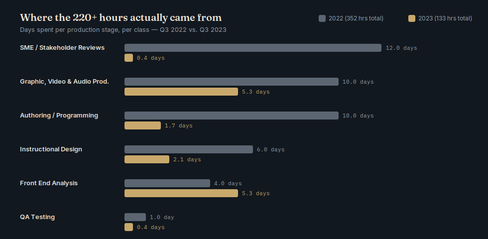
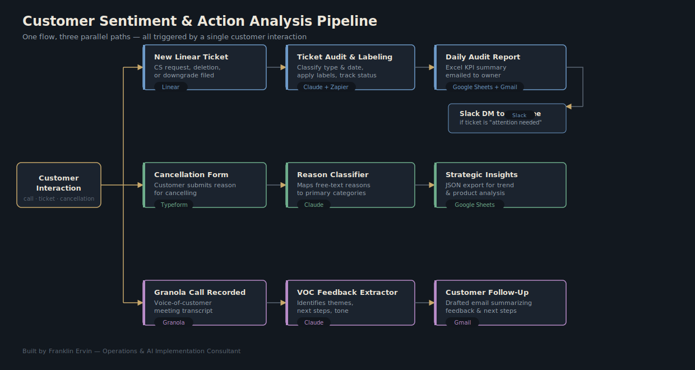
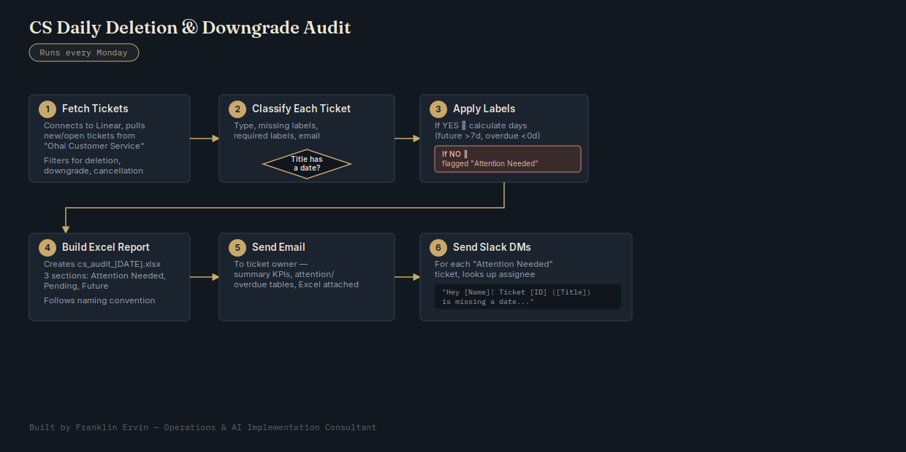

Each one follows the same shape: a messy manual process, a clear goal, a system I built, and a measurable result.
At CareAcademy, producing one hour of interactive e-learning content took 360 hours per class as of Q3 2022 — worse than every published industry benchmark (ATD: 130 hrs, industry average: ~180 hrs, Chapman Alliance: 184 hrs, Radcom: 226 hrs). Worse still, the team had no real operating data: no visibility into estimated vs. actual task time, team capacity, or how much time was going to support work instead of roadmap work.
Set an explicit, board-visible goal: bring production time down to the ~180-hour industry average.
Led a three-part initiative: rolled out a full project management framework in ClickUp across every stage of a project — initiation, planning, execution, and closure — a rollout that ran January–July 2023 and kicked off at a company off-site; introduced generative AI tools directly into the content workflow; and redesigned the subject matter expert (SME) review process.
Cut production time to 133 hours per class by Q3 2023 — beating not just the internal 180-hour goal, but every industry benchmark cited. The biggest gains came from initial content drafting, SME reviews, and e-learning authoring. It also surfaced valuable side insights: the Compliance team separately beat its own migration goals by 12–30%, and the new data revealed the Content team was spending 15–20% of its time on non-roadmap operational work — insight that now feeds an accurate, data-driven content roadmap.

Customer signals were scattered across three disconnected sources — support tickets, cancellation forms, and voice-of-customer call notes — each reviewed manually. Nothing connected them, so churn signals were slow to surface and follow-up was inconsistent.
Build one repeatable pipeline that takes any customer interaction and automatically turns it into structured, actionable output — without adding headcount.
Designed a single pipeline triggered by any customer interaction, forking into three automated paths: Linear tickets get audited and labeled, producing daily Excel/email KPI reports and Slack alerts for anything urgent; cancellation form submissions get classified by reason into structured trend data; and Granola call transcripts get mined for themes and next steps, auto-drafting a customer follow-up email.
Real-time visibility into churn signals that used to take manual review to catch, automated daily reporting, faster team response through targeted Slack alerts, and structured trend data now feeding product decisions.

Deletion and downgrade requests came in as Linear tickets, but knowing which ones were missing key information, which were overdue, and which needed urgent attention required someone manually sifting through tickets every day.
Automate a recurring audit that classifies every ticket, flags gaps, and proactively notifies the right people — running like clockwork every Monday morning.
Built an automated workflow: fetch new/open tickets from Linear filtered by keyword, classify each one for missing information and days overdue or upcoming, auto-apply the correct labels back in Linear, generate a structured Excel report broken into Attention Needed / Pending / Future, email that report to the ticket owner, and send individual Slack DMs to assignees for anything flagged urgent.
A fully automated, recurring audit that replaced manual ticket-sifting entirely — consistent labeling, consistent reporting, and proactive notifications instead of tickets quietly aging out.
